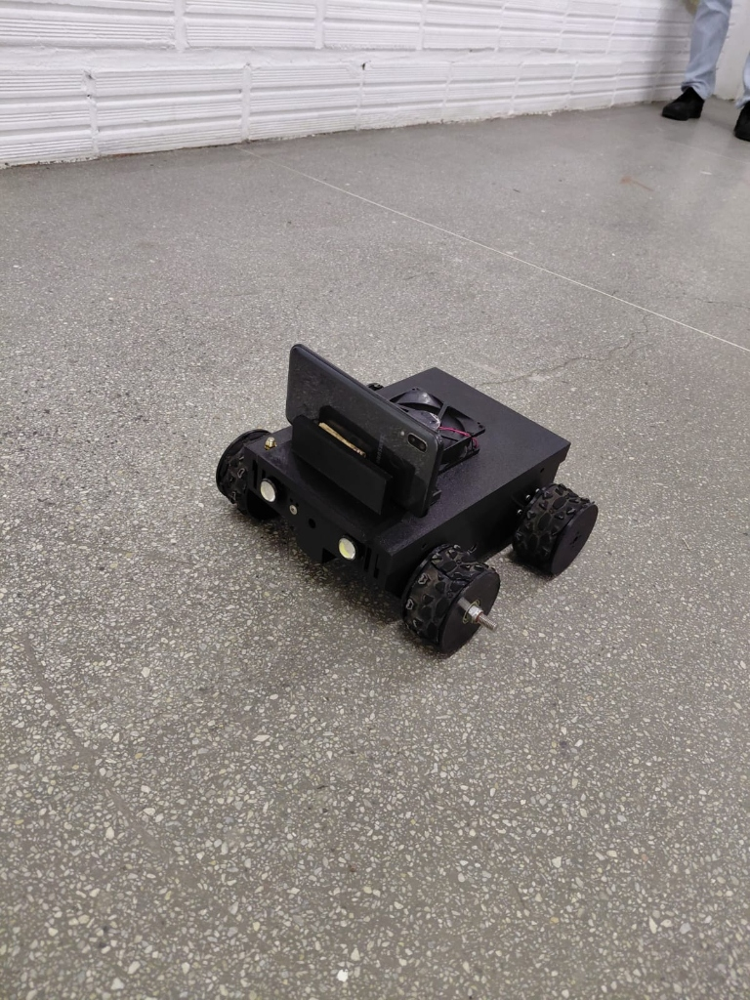
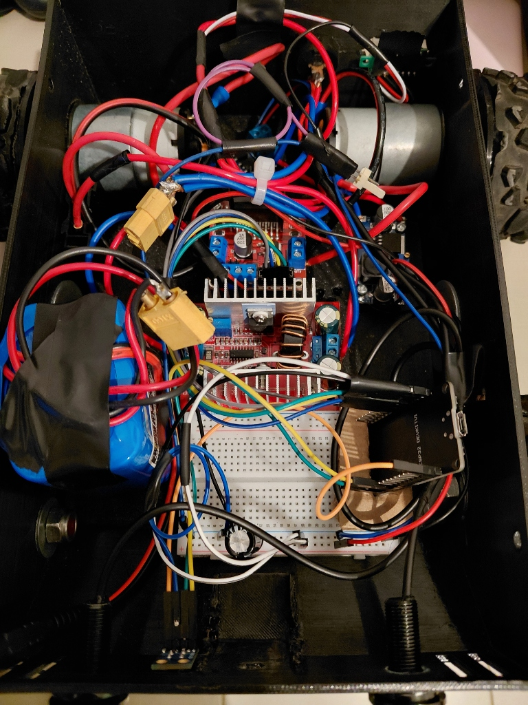

Tácio Moreira
Desenvolvedor Full Stack e Backend. Engenharia da Computação, Vitória da Conquista, BA.
Construo aplicações web, serviços backend e ferramentas para desenvolvedores.
Projetos
-
Orbit — Transferência P2P em rede local
Envio de arquivos e clipboard entre Android e Linux sem nuvem. Streaming com memória constante (~1,39 MB de RAM em arquivo de 1 GB), integridade SHA-256 e progresso em tempo real via WebSockets.
Node.js · Fastify · TypeScript · Flutter · systemd
-
Relay — Proxy reverso e inspetor HTTP
Aplicativo desktop que intercepta e inspeciona tráfego HTTP/WebSocket local. Importa coleções OpenAPI e Postman, reenvia requisições, simula falhas de rede e roda checagens de segurança (DAST, BOLA).
Rust · Tauri · Svelte
-
GastoSync — Gestão financeira pessoal com IA
App Web e Android com persistência local em SQLite (Drift) e sincronização com API em Go, além de um agente em Python para análise de gastos e orçamento. Em produção.
Flutter · SQLite (Drift) · Go · Python (FastAPI) · Groq
-
Robô Inspetor — Inspeção visual e térmica embarcada
Robô terrestre com ESP32 e sensor infravermelho MLX90614 (I2C). Chassi 3D modelado no Onshape, corte automático dos motores por perda de sinal (Watchdog) e controle pelo navegador.
ESP32 · C++ · PlatformIO · Onshape


Stack
- Linguagens
- TypeScript, C#, Python, Java, Go, Rust, C++
- Back-end
- Node.js, .NET 8, Spring Boot, FastAPI
- Front-end e mobile
- Angular, React, Svelte, Flutter
- Dados e mensageria
- PostgreSQL, MySQL, MongoDB, SQLite, Redis, RabbitMQ
- Infra e qualidade
- Docker, GitHub Actions, Testcontainers, Linux